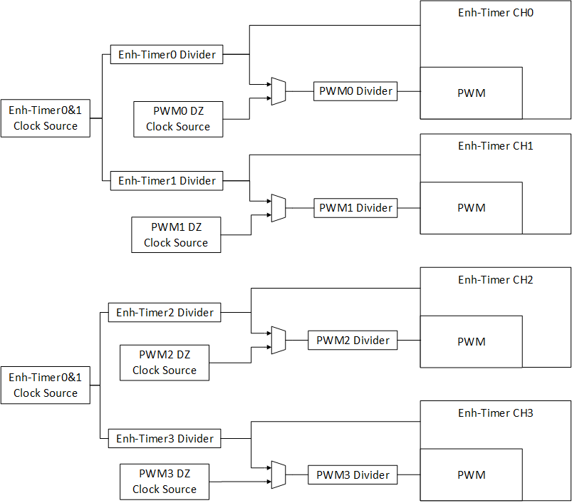
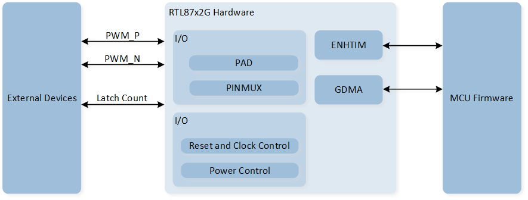
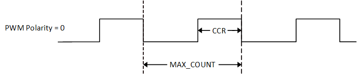
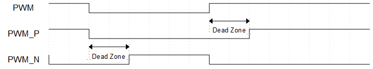
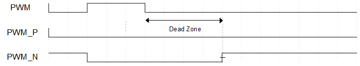

ENHTIMER
Sample List
This chapter introduces the details of the ENHTIM sample. The RTL87x2G provides the following samples for the ENHTIM peripheral.
Functional Overview
The RTL87x2G embeds four Enhance-Timer modules which are software controlled, programmable and can be used for various tasks.
Every 2 Enhance-timer channel (channel0 & channel1, channel2 & channel3) shares the same clock source. Each Enhance-timer channel has its own independent pre-scaler, supporting division options is Div1/2/4/8/16/32/40/64. Each Enhance-timer channel supports a dead-time function, and its clock source and clock division can be set independently.

Enhance-Timer Clock Tree
Feature List
32-bits counter.
Support 3 mode:
Free-run mode.
User-define PWM auto mode.
User-define PWM manual mode.
Every 2 Enhance-timer channel (channel0 & channel1, channel2 & channel3) shares the same clock source. Each Enhance-timer channel has its own independent pre-scaler, supporting division options.
Counting method:
Free-run mode: increase.
User-define PWM mode: decrease.
Each Enhance-timer supports PWM Output function (include all high and all low).
Each Enhance-timer supports complementary output & dead zone.
Support GDMA interface for each timer's CCR FIFO or Latch count FIFO.
Latched count FIFO depth: 32.
Support PWM phase shift output.
Support One Shot mode.
Block Diagram
Here is the block diagram of ENHTIM. By invoking the MCU Firmware, the ENHTIM timer function, PWM output function, or Latch function can be implemented. The hardware will execute the corresponding operations based on the firmware settings.

System Block Diagram of ENHTIM
Timer Mode
The counter increments in Free-run mode and decrements in user-defined mode. If the timer's interrupt is enabled, a timeout flag will be generated and an interrupt will be triggered when the timer underflows or overflows.
Free-run Mode
In Free-run mode, the initial value of the counter is 0. After enabling ENHTIM, the 32-bit counter begins to increment. Once the counter counts to 0xFFFFFFFF, it will overflow and wrap around to 0, continuing to increment.
In the initialization structure, configure ENHTIM_InitTypeDef::ENHTIM_Mode to ENHTIM_MODE_FreeRun to set ENHTIM to Free-run mode.
User-define Mode
In user-defined mode, the initial value of the counter is user-defined and set through the configuration ENHTIM_InitTypeDef::ENHTIM_MaxCount to determine the loaded counter value.
The counter will count from ENHTIM_InitTypeDef::ENHTIM_MaxCount - 1 down to 0, and after underflow, it will reload the counter value to ENHTIM_InitTypeDef::ENHTIM_MaxCount - 1.
PWM Mode
Each ENHTIM supports PWM output functionality. During initialization, set ENHTIM_InitTypeDef::ENHTIM_PWMOutputEn to ENABLE to activate PWM output mode.
Here are some PWM parameter configuration settings:
The PWM polarity output is set through the
ENHTIM_InitTypeDef::ENHTIM_PWMStartPolarity.The PWM period is set through the MAX-COUNT
ENHTIM_InitTypeDef::ENHTIM_MaxCount.The PWM duty cycle is determined by both the MAX-COUNT and the CCR(Capture/Compare Register).
In user-defined PWM Manual mode, set the counter compare value by using
ENHTIM_InitTypeDef::ENHTIM_CCValueinto the CCR.In user-defined PWM Auto mode, set the counter compare value into the CCR FIFO by calling the function
ENHTIM_WriteCCFIFO().
When ENHTIM_InitTypeDef::ENHTIM_PWMStartPolarity is set to ENHTIM_PWM_START_WITH_LOW:
When
ENHTIM_InitTypeDef::ENHTIM_CCValueis set to 0, the PWM will continuously output a high level.When the value set for
ENHTIM_InitTypeDef::ENHTIM_CCValueis greater than or equal toENHTIM_InitTypeDef::ENHTIM_MaxCount, the PWM will continuously output a low level.
After calling ENHTIM_Cmd() to enable the TIM,
the PWM counter will start counting down from MAX-COUNT. When it reaches the counter compare value set in CCR or the CCR FIFO, the PWM output will toggle.
The counter will continue counting down, and when it underflows, the PWM output will toggle again.
This process then repeats.

PWM Waveform
User-define PWM Manual Mode
Set ENHTIM_InitTypeDef::ENHTIM_Mode to ENHTIM_MODE_PWM_MANUAL during initialization to configure the mode as user-defined PWM Manual mode.
In the user-defined PWM Manual mode, the timer will load the compare value from the CCR, with the compare value set through ENHTIM_InitTypeDef::ENHTIM_CCValue.
User-define PWM Auto Mode
During initialization, set ENHTIM_InitTypeDef::ENHTIM_Mode to ENHTIM_MODE_PWM_AUTO to configure the mode as User-defined PWM Auto mode.
In User-defined PWM Auto mode, the timer will load comparison values from the CCR FIFO. Before enabling the timer, the user must call the function ENHTIM_WriteCCFIFO() to set the comparison values.
Each time a comparison value is loaded, the PWM will output one cycle of a PWM waveform with a duty cycle corresponding to the comparison value, and the comparison value will be removed from the CCR FIFO.
If the CCR FIFO is empty, the timer will load the previous comparison value from the CCR FIFO. The depth of the CCR FIFO is 8.
Complementary Output and Dead Zone
Each ENHTIM supports PWM complementary output and dead zone functions. Set ENHTIM_InitTypeDef::ENHTIM_PWMDeadZoneEn to ENABLE during initialization to enable this feature.
The clock source for the dead zone function can be selected as either a 32kHz clock source or the ENHTIM clock, set through the initialization structure parameter ENHTIM_InitTypeDef::ENHTIM_PWMDeadZoneClockSource.
The frequency division factor for the dead zone clock can be set using the initialization structure parameters ENHTIM_InitTypeDef::ENHTIM_PWMDeadZone_ClockDivEn and ENHTIM_InitTypeDef::ENHTIM_PWMDeadZone_ClockDiv.
The size of the dead zone can be set using the initialization structure parameter ENHTIM_InitTypeDef::ENHTIM_DeadZoneSize, with a maximum setting value of 0xFF.
The formula for calculating dead zone time is deadzone time = dead zone size * dead zone clock period.
The setting of dead time is divided into the following three situations:
When the dead time is greater than 0 and less than the duration of the PWM high level/low level, the rising edge output of PWM_P and PWM_N will be delayed by a dead time.

PWM Dead Time Diagram (Dead time is greater than 0 and less than PWM high/low level duration)
When the dead time is greater than the duration of the PWM high level, PWM_P will continuously output a low level.

PWM Dead Time Diagram (Dead Time Greater Than PWM High Level Duration)
When the dead time is greater than the PWM low-level duration, PWM_N will continuously output a low level.

PWM dead time diagram (dead time longer than PWM low-level duration)
One Shot Function
ENHTIM supports the One Shot function in both Free-run mode and user-define mode. In the initialization structure, set ENHTIM_InitTypeDef::ENHTIM_OneShotEn to ENABLE to enable this function.
After enabling the One Shot function, calling ENHTIM_Cmd() will not start ENHTIM counting; an additional call to ENHTIM_OneShotCmd() is required to activate the One Shot function and start the timer counting. Regardless of whether the counter underflows or overflows, the timer will stop counting, and the user can call ENHTIM_OneShotCmd() again to restart the timer counting.
GPIO Latch Function
In Free-run mode, Each ENHTIM supports up to three trigger signals per channel to latch the count. If you want to trigger the latch count using a GPIO signal, you can only select Latch Count 0, while the remaining two are used for other external signal-triggered latch count functions.
In the initialization structure, the Latch Count function is enabled by setting ENHTIM_InitTypeDef::ENHTIM_LatchCountEn, and the GPIO Latch trigger condition is set by ENHTIM_InitTypeDef::ENHTIM_LatchCountTrigger. The GPIO pin is set through ENHTIM_InitTypeDef::ENHTIM_LatchTriggerPad.
When the timer is enabled and the GPIO signal meets the trigger condition, the stored count value will be recorded in the corresponding Latch Count FIFO. When the data quantity in the Latch Count FIFO reaches the set threshold, it will trigger the ENHTIM_INT_LATCH_CNT_FIFO_THD interrupt.
GDMA Handshake
ENHTIM supports the GDMA handshake interface for CCR FIFO and Latch Count FIFO, allowing access to FIFO and data transfer via GDMA.
In the initialization structure, enable GDMA transfer by setting ENHTIM_InitTypeDef::ENHTIM_DmaEn, and set ENHTIM_InitTypeDef::ENHTIM_DmaTragget to determine the GDMA transfer target, which can be selected as either CCR FIFO or Latch Count FIFO.